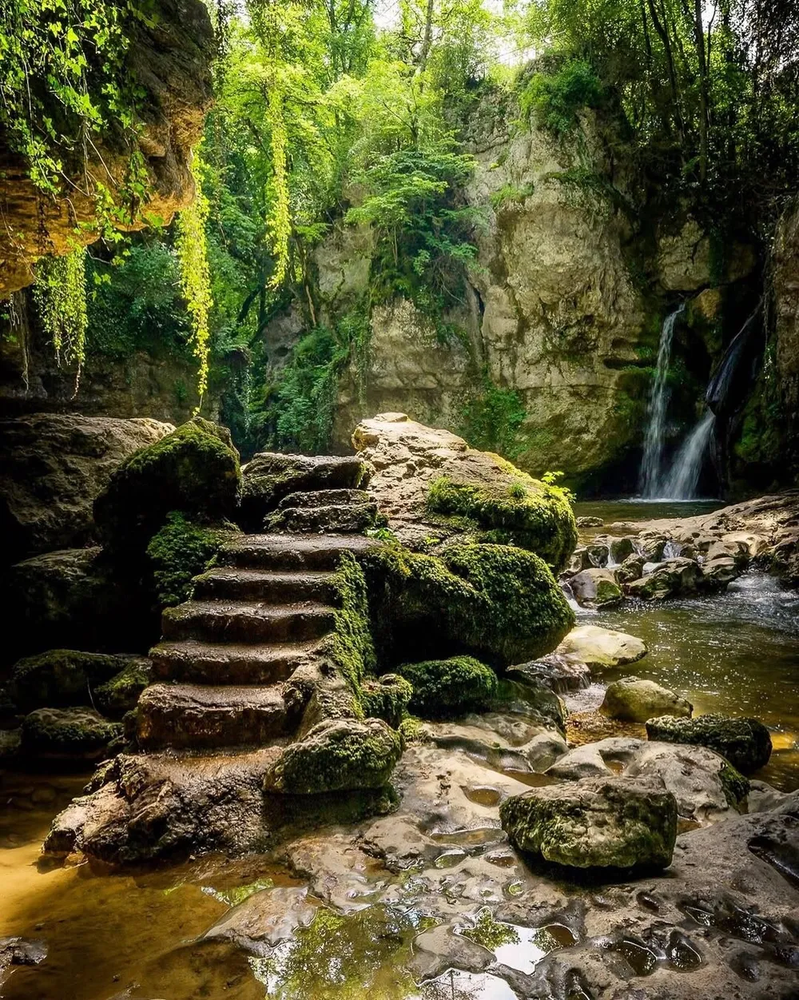

Photo · @christofs70A QUIET WATERFALL IN THE VAUD
A short hike to a rarely photographed waterfall. Perfect for a quick morning when you don't want crowds.
Park at 46.654948, 6.492129 and hike down. It's short and easy, good for families, and rarely busy.
Overcast is the friend here. Less contrast, better colour in the stone and moss around the falls. Bring a tripod for any long-exposure work.